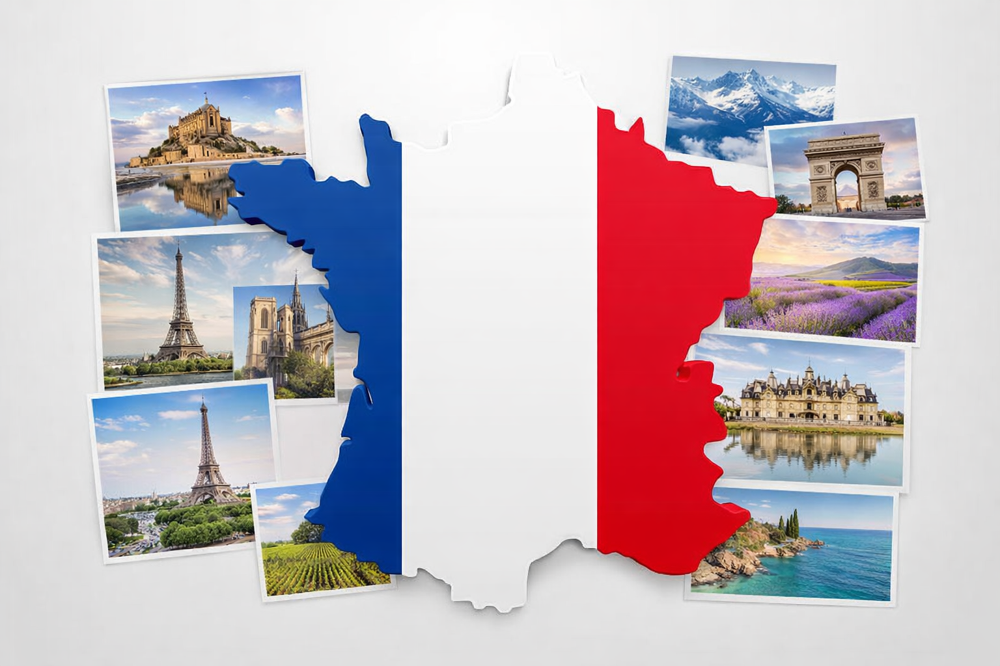
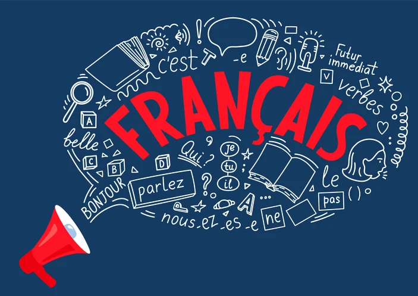
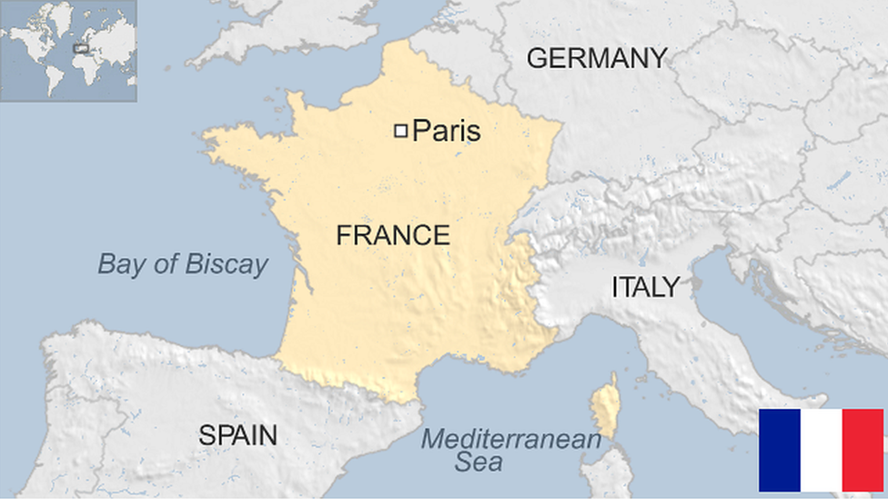
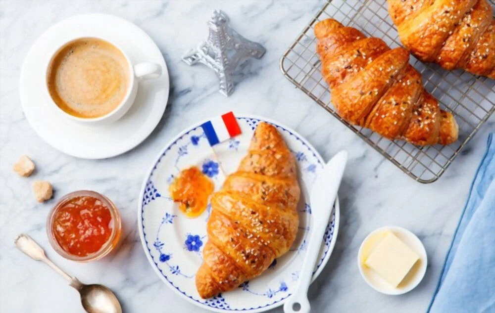
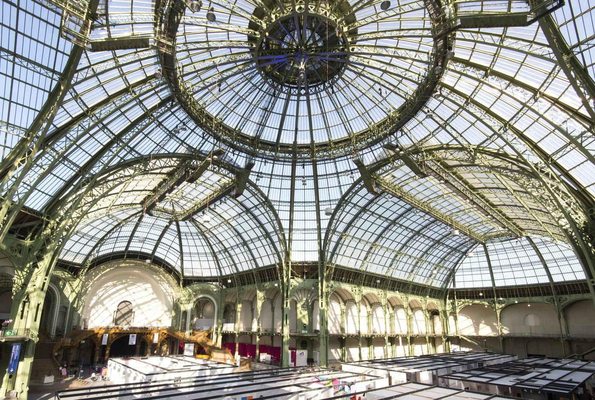
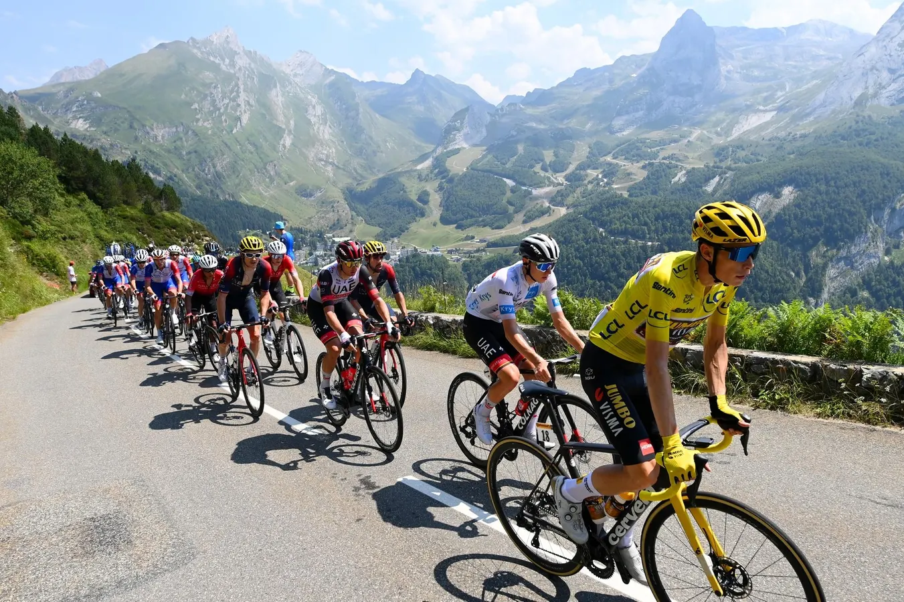

France is a country famed for its art, cuisine, and varied landscapes.
From its roots in ancient Gaul and the Roman era through the rise of medieval kingdoms, the country evolved into a powerful absolute monarchy by the early modern period. The upheavals of the late 18th century—most notably the French Revolution—overturned old institutions and helped spread ideas of citizenship, rights, and secular government across Europe. The 19th and early 20th centuries brought industrialization, imperial expansion, and repeated political change; two world wars in the 20th century deeply affected its society and borders, and the postwar era saw reconstruction, decolonization, and the creation of stable republican institutions that shape the nation today.
Culturally, the country has been a major center of literature, philosophy, visual arts, fashion, and gastronomy, with its language and cultural institutions exerting strong global influence. Politically and economically, it is an important actor in Europe and the wider world—contributing to international diplomacy, science, and the arts—while facing modern challenges such as social inequality, migration, and debates over identity and secularism. Its long history of innovation and public debate continues to inform both domestic life and its role on the global stage.
Quick Facts
 THE EIFFEL TOWER
THE EIFFEL TOWER

FRENCH LANGUAGE THE FRENCH REVOLUTION
THE FRENCH REVOLUTION

LARGEST COUNTRY IN THE EU
FAMOUS CUISINE
ART CAPITAL MOTTO
MOTTO

TOUR DE FRANCEClick to flip
Title
Content goes here...